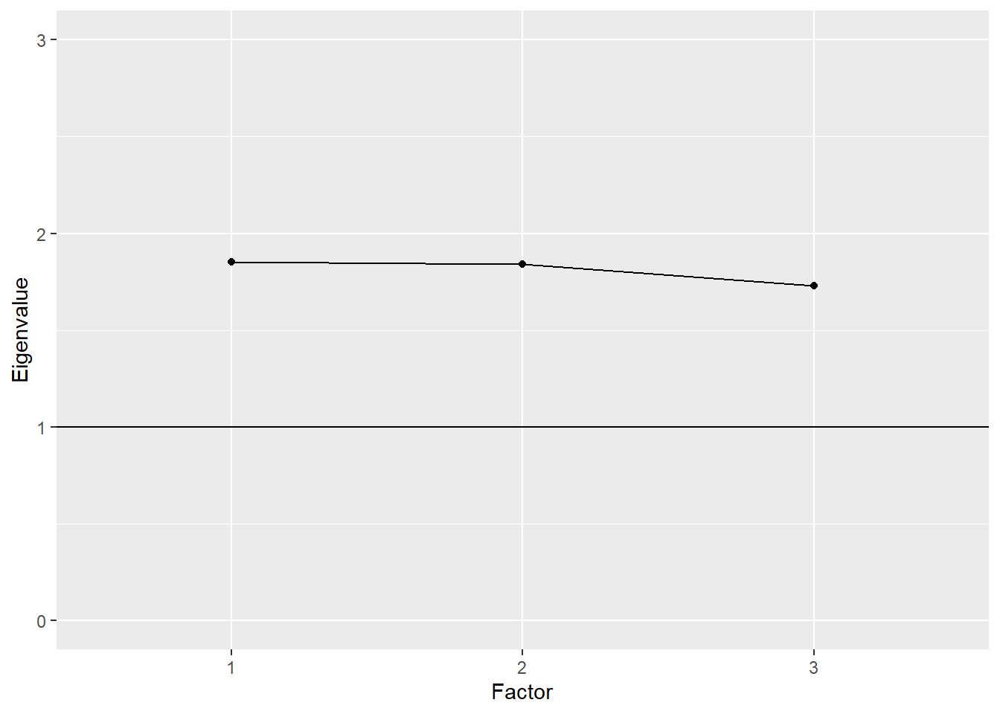
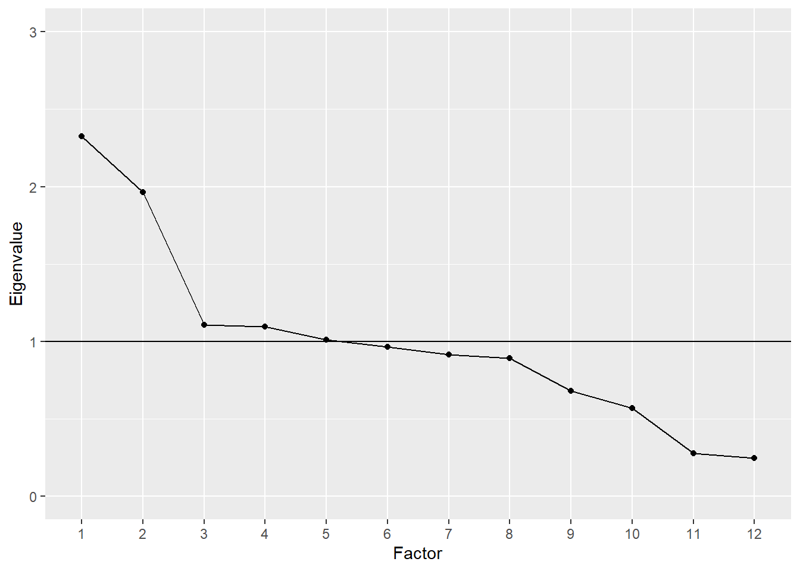

18 Exploratory factor analysis
Exploratory factor analysis or EFA is used to explore the factor structure of a test or instrument. We may not know or understand well the number and types of factors that explain correlations among our items and how these factors relate to one another. So, we explore.
The Beck Depression Inventory
Here’s an example. We’ve referred to the Beck Depression Inventory, the latest version of which, the BDI-II, was published in 1996 (Beck, Steer, and Brown 1996). The BDI-II contains 21 items measuring depressive symptomology. Each item is scored from 0 to 3, and a total score is used to determine a person’s level of depression, whether minimal (scores of 0 to 13), mild (14 to 19), moderate (20 to 28), or severe (29 to 63).
The epmr package contains data from the BDI-II in the form of correlation and covariance matrices, as reported in Table 2 of Whisman, Perez, and Ramel (2000). Each value in the correlation matrix is a correlation between scores on a given pair of BDI-II items. These are based on an administration of the BDI-II to 576 undergraduate students. See ?BDI for details. In the interest of space, we’ll just print the first four rows and columns of the correlation matrix. Note that the diagonal elements of the matrix are all 1.00, as a variable always correlates perfectly with itself.
# Subset of correlations from BDI data set in the epmr
# package
BDI$R[1:4, 1:4]
#> sadness crying failure guilt
#> sadness 1.00 0.38 0.24 0.44
#> crying 0.38 1.00 0.41 0.38
#> failure 0.24 0.41 1.00 0.30
#> guilt 0.44 0.38 0.30 1.00Some questions we might ask about the BDI-II include, do the items all measure the same thing? Or do they measure different things? Is depression a unidimensional construct? Or is it multidimensional, involving different underlying components? And do these components capture meaningful amounts of variability in observed depression scores? Or do scores function independently with little shared variability between them? These are questions we can begin to answer with EFA.
Suppose that a single factor is best, with all of the items loading strongly on it and only loading to a small degree on other factors. In this case, we could assume that the single factor represents an overall measure of depression, and all of the items contribute to the measure. Alternatively, suppose that the items don’t consistently load on any one factor, but instead are influenced by numerous less important ones. In this case, each item may measure a distinct and unique component of depression that does not relate to the other measured components. Finally, what if the items tend to function well together in groups? Perhaps some items tend to correlate strongly with one another because they all measure a similar component of depression.
A number of studies have explored the factor structure of the BDI-II. EFA results tend to show that two factors account for the correlations in scores. The first factor seems to capture more cognitive depressive symptoms. The items loading on the cognitive factor measuring feelings of guilt, irritability, sadness, and loss of interest. The second factor seems to capture more somatic symptoms. The items loading on the somatic factor involve depressive feelings that can manifest physically, such as loss of energy, changes in appetite, and difficulty staying on task. The somatic items may load to a lesser degree on the cognitive factor, but they tend to load more strongly together on the somatic factor, and vice versa.
The presence of two factors on the BDI-II suggests that subscores based on each factor may provide more detailed information about where an individual’s depressive symptoms lie. For example, consider two patients each with the same total score of 18 across all 21 items. Using the published cutoffs, each patient would be categorized as having mild depression. However, one patient may have scored highly only on the somatic items, whereas the other may have scored highly only on the cognitive ones. These differences are not evident in a single total score. Factor analysis suggests that subscores interpretations in cases like this may be justified.
We’ll come back to the BDI-II later on, when we use a confirmatory factor analysis to examine the correlations in BDI.
18.1 Steps in EFA
The BDI-II example above brings up some of the important steps in conducting an EFA. These steps involve choosing an initial number of factors to explore, preparing our data and fitting the EFA model, examining patterns in factor loadings and error terms, and evaluating factor quality and choosing a final factor structure.
1. Choose the number of factors
We start an EFA by choosing the number of factors that we want to explore, potentially up to the number of items in our data set, but preferably much fewer. This choice may simply be based on apparent similarities in the content of our test items. For example, in the field of industrial and organizational psychology, a test developer may be tasked with defining the key features of a particular job, so as to create a measure that identifies employees who are most likely to succeed in that job. Test content could be based initially on conversations with employees about their job responsibilities and the skills and traits they feel are most important to doing well. The test developer can then look for trends or themes in the test content. Perhaps some items have to do with loyalty, others with organizational skills, and the rest with being outgoing. Three factors seem appropriate here.
The initial choice of a number of factors may similarly be based on a test outline showing the intended structure of an instrument, with items already written specifically to fit into distinct scales. For example, educational tests are often designed from the beginning to assess one or more content domains. These domains usually map onto scales or subscales within a test. In turn, they can inform our choice of the number of factors to explore in an EFA.
When fitting an EFA, we will allow the model to identify more factors that we expect or hope to end up with. Some EFA software will automatically fit the maximum possible number of factors. R requires that we specify a number. By allowing for more factors than we initially choose, we get an idea of how our expectation compares with less parsimonious solutions. The maximum possible number of factors in an EFA depends on our sample size and the number of items in our test. A general guideline is to plan for at least 3 items loading primarily on each factor. So, a test with 13 items should have no more than 4 factors.
2. Prepare the data and fit the model
The factor analysis models discussed in this module require that our items be measured on continuous scales, and that our factors of interest be expressed in terms of continuous scores. With dichotomously scored items, we need to adjust our data, and this process will not be covered here. Instead, we will examine polytomous items with responses coming from rating scales. These data may not be strictly continuous, but we will assume that they are continuous enough to support the corresponding EFA.
Factor analysis requires either a scored data set, with people in rows and observations (scored item responses) in columns, or a correlation matrix based on such a data set. In the first demonstration below we’ll use a data set, and in the second we’ll use a correlation matrix. When using a data set, the data are prepared simply be ensuring that all of the variables contain scored item responses. We will remove any incomplete cases.
Factor analysis also requires sufficient sample size given the number of items in our test and the number of parameters estimated in the model. One somewhat generous rule of thumb is to get five times as many people as observed variables. So, when piloting a test with 100 items, we would hope for complete data on at least 500 respondents. With small sample sizes and too many parameters, our EFA will not run or will fail to converge on a solution, in which case we may need to collect more data, reduce test length, or revise our proposed number of factors.
A variety of software packages are available for fitting EFA. Commercial software options include SPSS, SAS, and Mplus. We will use maximum likelihood methods in R, with functions from the base and epmr packages. Note that EFA is a complex statistical procedure and we are only scratching the surface in terms of customizing the model and tweaking the input and output. Topics such as estimation methods and rotation strategies will not be discussed here. Instead, we’ll accept recommended defaults, and focus on the more important considerations in running EFA and interpreting results.
3. Examine factor loadings
The EFA model estimates the relationships between each item on our test and each factor that the model extracts. These relationships are summarized within a factor loading matrix, with items in rows and loadings on each factor in columns. The loadings are usually standardized so as to be interpreted as correlations. Loadings closer to 0 indicate small or negligible relationships, whereas values closer to 1 indicate strong relationships. Most of the loadings we will see fall between 0 and 0.80.
Like with reliability coefficients, practical cutoffs for interpreting factor loadings depend on the type of instrument and data being analyzed, and on the field of research. As a general rule of thumb, loadings of 0.30 or higher may merit further interpretation, whereas loadings below 0.30 may not. In some situations, such as with shorter tests, smaller loadings around 0.20 may be interpreted as meaningful.
In an EFA, each item has its own unique error term, sometimes referred to as its uniqueness. This error consists of the leftover unexplained variance for an item, after removing the shared variance explained by the factors. The error terms in the EFA that we will examine are simply 1 minus the sum of the squared factor loadings for each item across factors. Because they measure the converse of the factor loadings, larger errors reveal items that do not fit well in a given model.
4. Evaluate factor quality
The EFA model also estimates the amount of variability in observed item scores that is explained by each factor. The concept of explained variability is related to the coefficient of determination from regression, and the reliability coefficient as presented in Module 30.3. In EFA, variability across all of our items can be standardized so that the variance per item is 1, and the sum of all the variances is simply the number of items. On a test with 13 items, the total variability would then be 13.
Variability explained for a given factor can be indexed using its standardized eigenvalue. An eigenvalue of 1 tells us that a factor only explains as much variability, on average, as a single item. On a test with 13 items, an eigenvalue of 13 (not likely) would tell us that a factor explains all of the available variability. On this same test, an eigenvalue of 3 would indicate that a factor explains as much variability as 3 items, and dividing 3 by 13 gives us 0.23, the proportion of total variability explained by this factor.
Larger standardized eigenvalues are better, as they indicate stronger factors that better represent the correlations in scores. Smaller eigenvalues, especially ones below 1, indicate factors that are not useful in explaining variability. Eigenvalues, along with factor loadings, can help us identify an appropriate factor structure for our test. We can reduce the number of factors and remove problematic items and then rerun our EFA to explore how the results change. This would bring us back to step 1.
Confirming our factor structure
In summary, we’ve outlined here four main steps in conducting an EFA.
- Choosing a number of factors. Our choice should be reasonable and parsimonious, and based on the underlying constructs we expect will best summarize the correlations among our items. We should explore more than our chosen number of factors, ideally as many as possible, for comparison purposes.
- Preparing the data and fitting the model. Our data must be quantitative and measured on a relatively continuous scale. Our factors will be measured as continuous variables. We’ll fit the model in R using the default options, as demonstrated below.
- Examining factor loadings, which estimate the relationship between each item and each modeled factor. Larger values indicate stronger relationships.
- Evaluate factors via eigenvalues, which estimate the total variance explained by each factor. Eigenvalues are compared to the number of items, and can be used to identify the factors that capture the most variability in scores.
Having completed these steps, the EFA should point us in the right direction in terms of finding a suitable number of factors for our test, and determining how our items load on these factors. However, because EFA does not involve any formal hypothesis testing, the results are merely descriptive. The next step involves a confirmatory analysis of the factor structure that we think is most appropriate for our test. Following a demonstration of EFA with PISA data, we’ll learn more about the role of CFA in test development.
18.2 Exploring PISA Approaches to Learning
The Approaches to Learning scale from the PISA 2009 student questionnaire contains 13 items measuring the strategies students use when learning. These items were separated by the PISA developers into the three subscales of memorization, elaboration, and control strategies. See the full text for the items in Appendix ??.
Choose factors, prep data, fit model
Note that the PISA09 data set includes IRT theta scores on each subscale, as estimated by PISA (PISA09$memor, PISA09$elab, and PISA09$cstrat). We’ll look at these later. For now, let’s explore an EFA model for all 13 items, with three factors specified. Give the small number of items, four factors may also work, but more any more is not recommended. We will use the fastudy() function from the epmr package, which runs an EFA using factanal() from the base package.
# Prepping PISA approaches to learning data for EFA
# Vectors of item names for memorization, elaboration, and
# control strategies
mitems <- c("st27q01", "st27q03", "st27q05", "st27q07")
eitems <- c("st27q04", "st27q08", "st27q10", "st27q12")
citems <- c("st27q02", "st27q06", "st27q09", "st27q11",
"st27q13")
alitems <- c(mitems, eitems, citems)
# Reduce to complete data for Great Britain
pisagbr <- PISA09[PISA09$cnt == "GBR", ]
pisagbr <- pisagbr[complete.cases(pisagbr[, c(mitems,
eitems, citems)]), ]
# Fit EFA with three factors
alefa <- fastudy(pisagbr[, alitems], factors = 3)Examine factor loadings
Having fit an EFA with three factors, we’ll first examine the loadings. The loadings matrix shows the 13 approaches to learning variable names in rows, and the three factors in columns. The values in a given row are the loadings for an item across the three factors. By default, values below 0.1 are not displayed when the matrix of factor loadings is printed to the R console. This simplifies our visual inspection of the results.
# Print approaches to learning EFA results
print(alefa, digits = 2)
#>
#> Exploratory Factor Analysis
#>
#> Loadings:
#> Factor1 Factor2 Factor3
#> st27q01 0.13 0.66
#> st27q03 0.23 0.66
#> st27q05 0.10 0.20 0.49
#> st27q07 0.39 0.40
#> st27q04 0.44 0.22 0.25
#> st27q08 0.63 0.14
#> st27q10 0.67 0.18
#> st27q12 0.74 0.12
#> st27q02 0.11 0.38 0.43
#> st27q06 0.15 0.64 0.24
#> st27q09 0.33 0.59 0.13
#> st27q11 0.17 0.55 0.33
#> st27q13 0.25 0.52 0.15
#>
#> Factor1 Factor2 Factor3
#> SS loadings 1.85 1.84 1.73
#> Proportion Var 0.14 0.14 0.13
#> Cumulative Var 0.14 0.28 0.42The first four items in the table pertain to the memorization scale. Notice that they load strongest on factor 3, with loadings of 0.66, 0.66, 0.49, and 0.40. Two of the memorization items also load above 0.1 on factor 1, and three load above 0.1 on factor 2.
The next four items pertain to the elaboration scale. These load strongest on factor 1, with loadings of 0.44, 0.63, 0.67, and 0.74. They all also load somewhat on factor 2, and one loads on factor 3.
Finally, the last five items pertain to the control strategies scale. Loadings tended to be strongest for factor 2, with 0.38, 0.64, 0.59, 0.55, and 0.52. All of the control strategies items also had small loadings on the other two factors.
By increasing the cutoff when printing the loadings matrix, we can highlight visually where the stronger factor loadings are located. The trends described above, with scale items loading together on their own factors, become more apparent.
# Print results again, rounding and filtering loadings
print(alefa, digits = 2, cutoff = 0.3)
#>
#> Exploratory Factor Analysis
#>
#> Loadings:
#> Factor1 Factor2 Factor3
#> st27q01 0.66
#> st27q03 0.66
#> st27q05 0.49
#> st27q07 0.39 0.40
#> st27q04 0.44
#> st27q08 0.63
#> st27q10 0.67
#> st27q12 0.74
#> st27q02 0.38 0.43
#> st27q06 0.64
#> st27q09 0.33 0.59
#> st27q11 0.55 0.33
#> st27q13 0.52
#>
#> Factor1 Factor2 Factor3
#> SS loadings 1.85 1.84 1.73
#> Proportion Var 0.14 0.14 0.13
#> Cumulative Var 0.14 0.28 0.42Note that item st27q02 had a larger loading on factor 3, the memorization factor, than on factor 2. This suggests that this item is measuring, in part, a learning strategy that involves a skill related to memorization. The item may fit better in the memorization scale than the control scale.
The item error terms summarize the unexplained variability for each item. Items with larger factor loadings will have lower errors, and vice versa. Here, we confirm that the errors, contained in alefa$uniquenesses, are 1 minus the sum of squared factor loadings
# Print uniquenesses, and check sum of squared loadings
round(alefa$uniquenesses, 2)
#> st27q01 st27q03 st27q05 st27q07 st27q04 st27q08 st27q10 st27q12 st27q02 st27q06
#> 0.55 0.50 0.71 0.69 0.70 0.58 0.51 0.43 0.67 0.51
#> st27q09 st27q11 st27q13
#> 0.53 0.56 0.64
round(rowSums(alefa$loadings^2) + alefa$uniquenesses, 2)
#> st27q01 st27q03 st27q05 st27q07 st27q04 st27q08 st27q10 st27q12 st27q02 st27q06
#> 1 1 1 1 1 1 1 1 1 1
#> st27q09 st27q11 st27q13
#> 1 1 1Evaluate factors
The factor loadings tend to support the alignment of the approaches to learning items into their corresponding scales. However, the results also show that many of the items are related to more than just the scales they were written for. This could be due to the fact that the three factors measure related components of a broader learning strategies construct. Correlations between the IRT theta scores for each scale are all moderately positive, suggesting overlap in what the scales are measuring.
# Correlations between PISA approaches to learning scores
# for Great Britain
round(cor(PISA09[PISA09$cnt == "GBR", c("memor", "elab",
"cstrat")], use = "c"), 2)
#> memor elab cstrat
#> memor 1.00 0.32 0.55
#> elab 0.32 1.00 0.48
#> cstrat 0.55 0.48 1.00Next, we can look at the eigenvalues for the factors, to determine the amount of total score variability they each capture. The R output labels the eigenvalues as SS loadings, since they are calculated as the sum of the squared loadings for each factor. The EFA results show eigenvalues of 1.85, 1.84, and 1.73, which each represent about 14% of the total score variability, for a cumulative variance explained of 42%. These results aren’t encouraging, as they indicate that the majority of variability in approaches to learning scores is still unexplained.
We can visually compare eigenvalues across factors using what’s called a scree plot. In the plot, factors are listed out on the x-axis, and eigenvalues are compared vertically in terms of their magnitude on the y-axis. Factors are presented in decreasing order by eigenvalue, with the largest value to the left and the smallest to the right. In a model with a strong primary factor that accounts for a large portion of the variability, the line connecting the eigenvalues across factors resembles a precipice that sharply declines and then leaves a pile of scree or rubble at the bottom. Hence, the name scree plot.
# Plot of approaches to learning eigenvalues
plot(alefa, ylim = c(0, 3))
#> Warning: Continuous limits supplied to discrete scale.
#> Did you mean `limits = factor(...)` or `scale_*_continuous()`?
The scree plot for the Approaches to Learning EFA with three factors resembles more of a plain than a cliff edge. The eigenvalues are all above 1, which is sometimes used as a cutoff for acceptability. They’re also all nearly equal.
With other types of tests where one or two strong underlying constructs are present, the scree effect will be more apparent. Here is an example based on the BDI$R correlation matrix presented above. The plot shows that the first two factors have eigenvalues near or above 2, whereas the rest are near or below 1. These first two factors correspond to the cognitive and somatic factors described above. Together they account for 26% of the variance.
# Plot of eigenvalues for BDI
bdiefa <- fastudy(covmat = BDI$R, factors = 12,
n.obs = 576)
plot(bdiefa, ylim = c(0, 3))
#> Warning: Continuous limits supplied to discrete scale.
#> Did you mean `limits = factor(...)` or `scale_*_continuous()`?
The EFA of the PISA 2009 Approaches to Learning scale leads us to conclude first that the 13 items provide only a limited picture of the three subscales being measured. Four to five items per scale, and per factor, does not appear to be sufficient. Although loadings were moderate, and aligned as expected onto the corresponding subscales, more items would likely improve the variance explained by each factor. Given these limitations, computing theta values based on unidimensional IRT models for each subscale may not be appropriate.